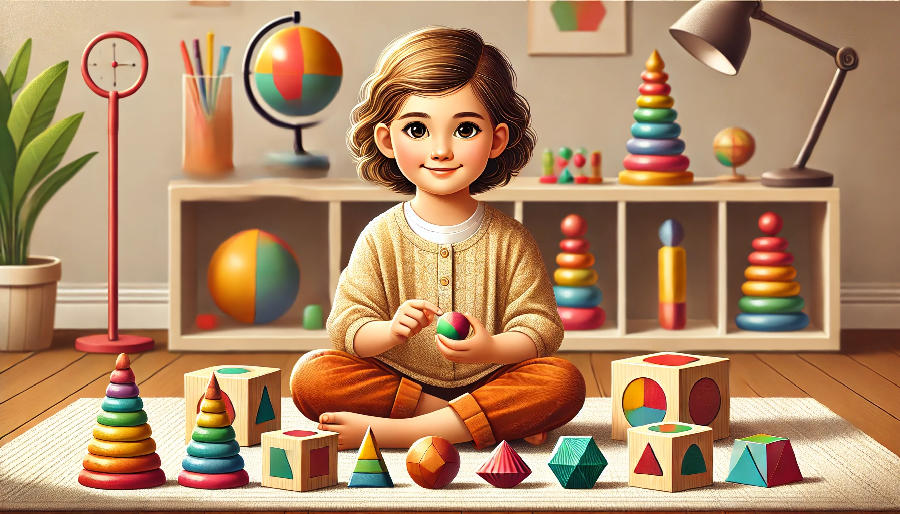

What Should a KG3 Child Know by the End of the Year?

Kindergarten 3
KG3 is an important milestone - the bridge between playful early learning and formal primary school. By the end of KG3, children are expected to develop confidence, responsibility, and readiness for more structured academic learning in Grade 1.
Let’s explore what a KG3 child should know and be able to do across key areas by the end of the school year.
Literacy and Language Development
KG3 builds on early literacy to help children become emergent readers and writers. By year’s end, most children can:
⁕ Recognize all uppercase and lowercase letters.
⁕ Know the letter sounds and begin to blend them to form words.
⁕ Read simple CVC words (cat, sun, log).
⁕ Read and understand short sentences using sight words and phonics.
⁕ Recognize and read common sight words.
⁕ Write their full name using correct letter formation.
⁕ Begin writing short sentences (“I like the red ball.”).
⁕ Use finger spacing, capital letters, and ending punctuation in writing.
⁕ Retell a story with a clear beginning, middle, and end.
⁕ Speak clearly and confidently in class discussions and storytelling.
Mathematics
KG3 learners are introduced to deeper number sense, operations, and basic problem-solving. They should be able to:
⁕ Count forward and backward up to 100.
⁕ Write numbers from 1 to 50 or more with correct formation.
⁕ Recognize and order numbers.
⁕ Understand place value for tens and ones (42 = 4 tens and 2 ones).
⁕ Add and subtract within 10 (or 20 with support).
⁕ Solve simple math problems using visuals or counters.
⁕ Recognize and name 2D and 3D shapes.
⁕ Compare sizes, weights, and lengths.
⁕ Recognize and complete simple patterns.
⁕ Understand basic time concepts (morning, night, days of the week, telling time to the hour).
⁕ Use simple graphs and charts to show data.
Social and Emotional Development
In KG3, children are expected to show increased self-regulation, independence, and empathy. By the end of the year, they should:
⁕ Follow classroom routines with minimal reminders.
⁕ Take care of personal belongings and class materials.
⁕ Express feelings using words instead of actions.
⁕ Solve simple peer conflicts with little adult help.
⁕ Work independently on tasks for 15–30 minutes.
⁕ Take turns, share, and work well in pairs or groups.
⁕ Show respect for others and demonstrate good manners.
⁕ Build confidence in their abilities and take pride in their work.
Fine and Gross Motor Development
KG3 continues to strengthen physical skills needed for writing, self-care, and play.
Fine motor skills:
⁕ Hold a pencil correctly using tripod grip.
⁕ Write letters and numbers clearly.
⁕ Draw detailed pictures with multiple objects and backgrounds.
⁕ Use scissors accurately to cut out shapes.
⁕ Color within lines and stay neat.
⁕ Complete tracing, copying, and guided writing tasks.
Gross motor skills:
⁕ Run, hop, jump, skip, and balance with good coordination.
⁕ Throw, catch, and kick a ball with control.
⁕ Follow movement directions during music, games, or physical activities.
⁕ Participate in sports or group games with basic rules.
Fine motor activities like lacing beads, using tweezers, or finger painting all support writing readiness.
Science and Discovery
Science in KG3 promotes inquiry, curiosity, and hands-on observation. Children should be able to:
⁕ Classify living and non-living things.
⁕ Understand life cycles (plant, butterfly, frog).
⁕ Name body parts and describe their functions.
⁕ Recognize weather changes and seasons.
⁕ Describe properties of materials (hard/soft, hot/cold).
⁕ Make simple predictions and observations.
⁕ Explore basic physical science (light, sound, push/pull).
Social Studies and Life Skills
By the end of KG3, children are more aware of the world and their role in it. They should:
⁕ Identify family members and their roles.
⁕ Understand community helpers (doctor, fireman).
⁕ Recognize cultural celebrations and traditions.
⁕ Understand classroom and school rules.
⁕ Follow simple maps or directions (left, right, near, far).
⁕ Know the basic needs of humans (food, water, shelter, clothing).
Arts, Music, and Creativity
KG3 encourages creative thinking and expression. Children should be able to:
⁕ Draw detailed pictures using various tools.
⁕ Sing and perform action songs confidently.
⁕ Use rhythm instruments in patterns or performances.
⁕ Act out simple plays or story scenes.
⁕ Create themed art projects using multiple steps and materials.
⁕ Use imagination in dramatic play, story writing, or puppet shows.
Technology Awareness
If technology is available, KG3 children may:
⁕ Use educational apps for reading or math practice.
⁕ Type their name using a keyboard.
⁕ Use a mouse or touchpad to navigate programs.
⁕ Learn basic computer safety.
Balance screen time with hands-on play and real-world interaction.
Final Thoughts
KG3 is all about building readiness for Grade 1, but that doesn’t mean pushing academic pressure. It means nurturing well-rounded growth through a mix of academics, play, creativity, and emotional support.
Every child is different, some may write full sentences, while others are still mastering letter sounds. That’s okay! What matters most is progress, encouragement, and a love for learning.
With strong foundations laid in KG3, your child will be ready to take on the exciting adventures of Grade 1 and beyond.